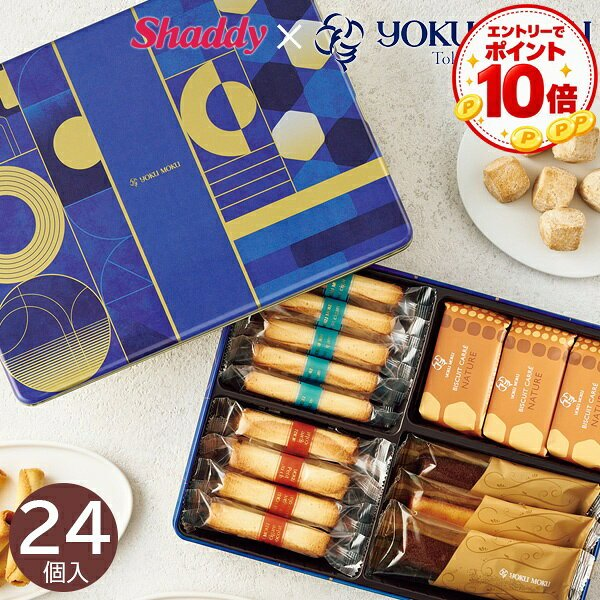
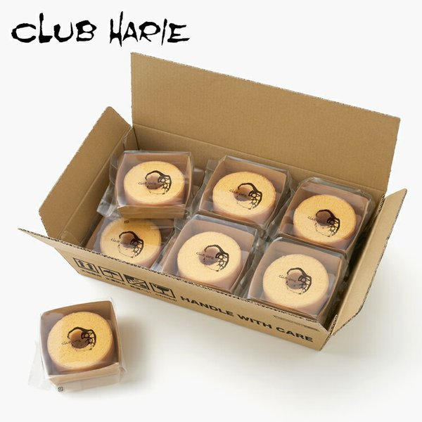
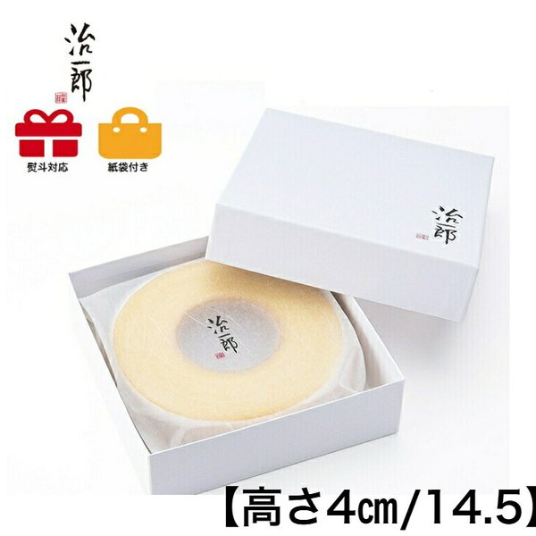
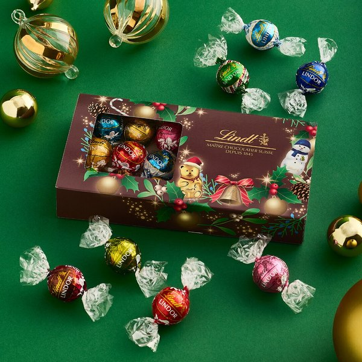
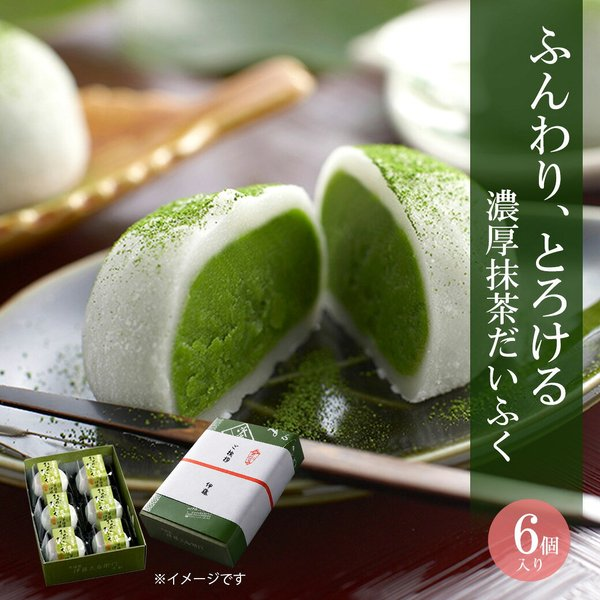
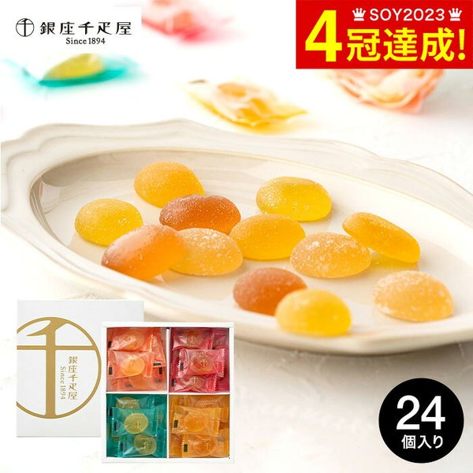
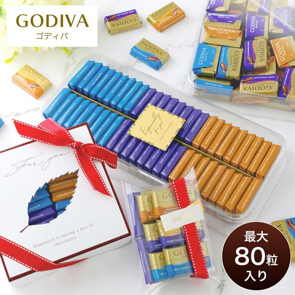
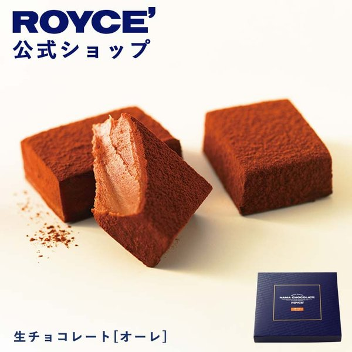
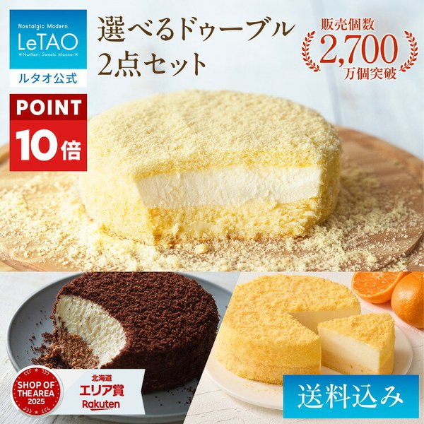

【2026年・年末年始の手土産】帰省・お年賀に持っていきたいスイーツギフト10選｜とらや小形羊羹・ヨックモック・クラブハリエ・治一郎・リンツ・伊藤久右衛門・千疋屋・ゴディバ・ROYCE'・ルタオを実売価格で比較
年末年始は、手土産を持つ機会が続きます。帰省先、親戚の家、お世話になった人への冬のご挨拶。毎回同じものでは芸がなく、かといって高すぎるものは相手に気を遣わせます。
選ぶ軸は3つです。「まず個包装かどうか」。家族で分けて食べる場面では、1個ずつ包装されているものが圧倒的に使いやすくなります。「次に日持ち」。年末に渡して年始に食べてもらうこともあるので、日持ちのする焼き菓子や羊羹は安心です。「最後に持ち運び」。要冷蔵のケーキは保冷が必要で、電車での長距離移動には不向きなことがあります。なお、レビュー件数が50件に満たない商品は記事内に実数を明記しています。
本記事では、楽天市場で人気・高評価の帰省手土産・お年賀スイーツギフト10選を、実売価格とレビュー評価つきで写真付き紹介します。
- おすすめ10選 スペック・特徴比較表
- BEST 1｜小形羊羹 10本入り 詰め合わせ
- BEST 2｜ガトーサンパ YGSP-A 焼き菓子詰め合わせ
- BEST 3｜バームクーヘンmini 12個入 シェアボックス
- BEST 4｜治一郎のバウムクーヘン 高さ約4cm ギフト
- BEST 5｜リンドール テイスティングセット 16個入
- BEST 6｜宇治抹茶だいふく 6個入
- BEST 7｜銀座ひとくちフルーツゼリー PGS-511 詰合せ
- BEST 8｜ナポリタン 3種アソート 個包装チョコレート
- BEST 9｜生チョコレート[オーレ] ギフト
- BEST 10｜ドゥーブルフロマージュ 4号（チョコレートケーキとの2点セットから選べる）
- 【読者負担0円】買わなくても得する無料サービス
- まとめ：帰省手土産・お年賀スイーツ10選の選び方
| 順位 | 商品名 | ブランド | 最大の特徴・おすすめ理由 | 総合評価 |
|---|---|---|---|---|
| BEST 1 | 小形羊羹 10本入り 詰め合わせ | とらや（虎屋） | 1本ずつ個包装で配りやすい | 4.61 |
| BEST 2 | ガトーサンパ YGSP-A 焼き菓子詰め合わせ | ヨックモック（YOKUMOKU） | 個包装で配りやすい | 4.70 |
| BEST 3 | バームクーヘンmini 12個入 シェアボックス | クラブハリエ（CLUB HARIE） | 1個ずつ包装で配りやすい | 4.74 |
| BEST 4 | 治一郎のバウムクーヘン 高さ約4cm ギフト | 治一郎 | 常温で持ち運べる | 4.50 |
| BEST 5 | リンドール テイスティングセット 16個入 | リンツ（Lindt） | 味の違うリンドールを少しずつ楽しめる | 4.73 |
| BEST 6 | 宇治抹茶だいふく 6個入 | 伊藤久右衛門 | 抹茶の香りと生クリームの組み合わせ | 4.65 |
| BEST 7 | 銀座ひとくちフルーツゼリー PGS-511 詰合せ | 銀座千疋屋 | 1個ずつ個包装で配りやすい | 4.80 |
| BEST 8 | ナポリタン 3種アソート 個包装チョコレート | ゴディバ（GODIVA） | 1粒ずつ個包装で配りやすい | 4.38 |
| BEST 9 | 生チョコレート[オーレ] ギフト | ROYCE'（ロイズ） | なめらかな口どけの生チョコレート | 4.87 |
| BEST 10 | ドゥーブルフロマージュ 4号（チョコレートケーキとの2点セットから選べる） | ルタオ（LeTAO） | 2層のチーズケーキを冷凍で届く | 4.82 |
小形羊羹 10本入り 詰め合わせ

とらやの小形羊羹は、1本ずつ個包装された羊羹の詰め合わせです。夜の梅やおもかげなど、定番の味が10本入り。個包装なので、帰省先で人数分に分けやすく、日持ちもするので手土産として渡しやすいお菓子です。包丁を使わずにそのまま食べられるため、お茶の席にも出せます。百貨店の包装で届くので、のしや包装の相談もしやすいです。楽天市場での実売価格は約3,456円（2026年11月時点）。
- 1本ずつ個包装で配りやすい
- 日持ちするので手土産に向く
- 包丁なしでそのまま食べられる
- レビューは33件と少なく、羊羹が苦手な人には向かない
ガトーサンパ YGSP-A 焼き菓子詰め合わせ

ヨックモックのガトーサンパは、シガールで知られるブランドの焼き菓子詰め合わせです。個包装なので、帰省先で家族に配りやすく、食べきれなかった分も持ち帰れます。缶や箱に入った詰め合わせは、渡したあとにも使ってもらえるのが手土産の利点。コーヒーにもお茶にも合う味で、年齢を選ばず出せます。楽天市場での実売価格は約3,240円（2026年11月時点）。
- 個包装で配りやすい
- コーヒーにもお茶にも合う
- 箱が手土産として渡しやすい
- レビューは43件と少なく、割れやすい繊細な菓子を含む
バームクーヘンmini 12個入 シェアボックス

クラブハリエのバームクーヘンminiは、1個ずつ包装された小さなバームクーヘンの詰め合わせです。焼きたてをそのまま閉じ込めたしっとりした生地で、切り分けずに食べられます。12個入りのシェアボックスは、帰省先で大人数に配るのにちょうどいい数。日持ちもするので、年末に渡して年始に食べてもらう使い方もできます。楽天市場での実売価格は約5,961円（2026年11月時点）。
- 1個ずつ包装で配りやすい
- 切り分けずにそのまま食べられる
- 12個入りで大人数に配れる
- しっとりした生地なので、暑い場所に置くと崩れやすい
治一郎のバウムクーヘン 高さ約4cm ギフト

治一郎のバウムクーヘンは、しっとりした生地で知られる静岡の銘菓です。高さ約4cmのホールタイプは、帰省先で切り分けて出す手土産に向いています。断面の年輪がきれいで、箱を開けたときの見た目も華やか。常温で持ち運べるので、電車での帰省でも崩れにくいのが助かります。楽天市場での実売価格は約2,480円（2026年11月時点）。
- 常温で持ち運べる
- 切り分けて出す手土産に向く
- 断面の年輪が見た目にも華やか
- 切り分けるときに包丁とまな板が要る
リンドール テイスティングセット 16個入

リンツのリンドールは、薄い殻の中に口どけのよいチョコレートが入った球状のチョコレートです。テイスティングセットは16個入りで、味の違うリンドールを少しずつ楽しめます。個包装なので配りやすく、年末年始の挨拶に持っていくお菓子として使いやすい。箱が華やかなので、そのまま渡しても手土産になります。楽天市場での実売価格は約2,980円（2026年11月時点）。
- 味の違うリンドールを少しずつ楽しめる
- 個包装で配りやすい
- 箱が華やかでそのまま渡せる
- チョコレートなので、暖房の近くに置くと溶ける
宇治抹茶だいふく 6個入

伊藤久右衛門の宇治抹茶だいふくは、抹茶を練り込んだ生地で生クリームとあんを包んだ大福です。切り口の抹茶の緑がきれいで、箱を開けたときの見た目が手土産向き。冷凍で届くので、食べる前に解凍すればできたてに近い食感が戻ります。抹茶好きの家族へのお年賀として喜ばれやすいお菓子です。楽天市場での実売価格は約2,390円（2026年11月時点）。
- 抹茶の香りと生クリームの組み合わせ
- 冷凍で届き、食べる前に解凍する
- 切り口の色がきれいで手土産向き
- 解凍後は早めに食べる必要があり、持ち歩きには向かない
銀座ひとくちフルーツゼリー PGS-511 詰合せ

銀座千疋屋のひとくちフルーツゼリーは、果物の果汁を使った小さなゼリーの詰め合わせです。1個ずつ個包装で、帰省先で子どもから大人まで配れます。甘さがしつこくないので、食事のあとにも出しやすい。包装済みで届くため、そのまま手土産として渡せるのも、年末年始の挨拶が続く時期には助かります。楽天市場での実売価格は約1,296円（2026年11月時点）。
- 1個ずつ個包装で配りやすい
- 甘さがしつこくなく食後にも出せる
- 包装済みでそのまま渡せる
- 要冷蔵ではないが、暖かい場所に長時間置くと型くずれする
ナポリタン 3種アソート 個包装チョコレート

ゴディバのナポリタンは、3種類の味を詰め合わせた個包装のチョコレートです。1粒ずつ包装されているので、帰省先で配るお菓子として使いやすく、少しずつ食べてもらえます。ブランドの知名度があるため、手土産として渡したときの安心感があります。箱が小さいので、荷物が増えがちな帰省の鞄にも入れやすいです。楽天市場での実売価格は約600円（2026年11月時点）。
- 1粒ずつ個包装で配りやすい
- 3種類の味を楽しめる
- 箱が小さく荷物にならない
- 個包装のぶん箱に対して粒数が多く、見た目の華やかさは控えめ
生チョコレート[オーレ] ギフト

ROYCE'の生チョコレートは、生クリームを練り込んだなめらかな口どけのチョコレートです。オーレはミルク感のある味で、幅広い年代に受け入れられます。箱が小さく、帰省の荷物に足しても負担になりません。冷蔵で持ち運べるため、冬の帰省の道中でも状態を保ちやすいのが利点です。楽天市場での実売価格は約1,215円（2026年11月時点）。
- なめらかな口どけの生チョコレート
- 箱が小さく荷物にならない
- 冬の道中でも状態を保ちやすい
- 要冷蔵なので、長時間暖房の効いた部屋に置けない
ドゥーブルフロマージュ 4号（チョコレートケーキとの2点セットから選べる）

ルタオのドゥーブルフロマージュは、2層のチーズケーキで知られる小樽の銘菓です。冷凍で届き、解凍して食べると上のムースと下のベイクドチーズの食感が重なります。4号サイズは2〜4人で分けやすく、帰省先の家族で囲むデザートに向いています。チョコレートケーキとの2点セットも選べるので、人数が多い家にも渡しやすいです。楽天市場での実売価格は約5,480円（2026年11月時点）。
- 2層のチーズケーキを冷凍で届く
- 4号サイズで家族で分けやすい
- チョコレートケーキとの2点セットも選べる
- 解凍に時間がかかるので、食べる予定の前日に冷蔵庫へ移す
この記事の商品を買う前に、まずは無料で得する選択肢をチェック。どれも登録・利用は0円で、無料期間中に解約すれば料金はかかりません。読みたい雑誌がある人、ポイントを貯めたい人、アンケートなら気軽という人、それぞれに合うものを選べます。
初回31日無料・無料期間中に解約すれば0円 → 楽天ポイントモール｜登録無料で毎日ポイ活
買い物なしでもポイントが貯まる無料サービス → 楽天インサイト｜アンケートに答えてポイント
登録無料・すきま時間のアンケートで貯まる → 楽天カード｜年会費永年無料
新規発行・年会費ずっと0円 →
4つのサービスの違いと使い分けは「出費0円で得する！買わずにポイントが貯まる無料サービス厳選4選」でまとめています。
💡 まとめ：帰省手土産・お年賀スイーツ10選の選び方
手土産は、渡す相手と移動距離で選ぶと迷いません。日持ちを優先するなら、とらやの小形羊羹、ヨックモックのガトーサンパ、クラブハリエのバームクーヘンmini、治一郎のバウムクーヘン。個包装で配りやすいのは、リンツのリンドール、銀座千疋屋のひとくちフルーツゼリー、ゴディバのナポリタン。冷蔵が必要でも特別感を出したいなら、伊藤久右衛門の宇治抹茶だいふく、ROYCE'の生チョコレート、ルタオのドゥーブルフロマージュです。帰省の荷物が多くなる人は、箱が小さく常温で持ち運べるものを選ぶと、道中で崩れる心配がありません。
楽天市場では「5と0のつく日」や「お買い物マラソン」などのキャンペーンに合わせて購入すると、ポイント還元が最大化してお得に手に入ります。ぜひチェックしてみてくださいね。